Devops Management - GitOps with Argo CD
1.1 ARGO CD Introduction
In this lab exercise, you will gain hands-on experience with Argo CD as a declarative GitOps continuous delivery tool for Kubernetes.
This guide will walk you through an example of how to build, deploy, and continuously manage an application following important GitOps practices.
We will be using the GitOps continuous delivery tool Argo CD in this lab. This controller enables developers to automate application deployment and lifecycle management.
Continuous Integration, Delivery, and Deployment are important devOps practices. These processes are valuable and ensures that the software is up to date timely.
-
Continuous Integration is an automation process which allows developers to integrate their work into a repository. When a developer pushes his work into the source code repository, it ensures that the software continues to work properly. It helps to enable collaborative development across the teams and also helps to identify the integration bugs sooner.
-
Continuous Delivery comes after Continuous Integration. It prepares the code for release. It automates the steps that are needed to deploy a build.
-
Continuous Deployment is the final step which succeeds Continuous Delivery. It automatically deploys the code whenever a code change is done. Entire process of deployment is automated.
GitOps in short is a set of practices to use Git pull requests to manage infrastructure and application configurations. Git repository in GitOps is considered the only source of truth and contains the entire state of the system so that the trail of changes to the system state are visible and auditable.
- Traceability of changes in GitOps is no novelty in itself as this approach is almost universally employed for the application source code. However GitOps advocates applying the same principles (reviews, pull requests, tagging, etc) to infrastructure and application configuration so that teams can benefit from the same assurance as they do for the application source code.
Argo CD is a declarative, GitOps continuous delivery tool for Kubernetes. Applications, application definitions, configurations, and environments should be declarative and version controlled. Also application deployment and lifecycle management should be automated, auditable, and easy to understand. All this can be done using Argo.
Check these guides out if you want to know more about Argo - Argo CD - Declarative GitOps CD for Kubernetes.
You can read more about Argo CD here: https://argoproj.github.io/argo-cd/
Argo CD architecture diagram
The Argo CD component are described below the diagram.
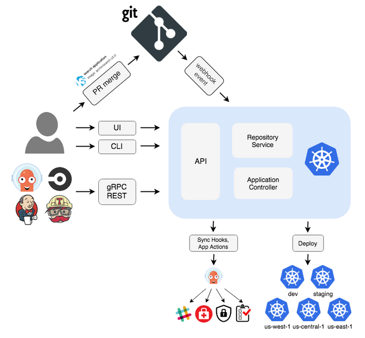
Argo CD Components
API Server
The API server is a gRPC/REST server which exposes the API consumed by the Web UI, CLI, and CI/CD systems. It has the following responsibilities:
-
application management and status reporting
-
invoking of application operations (e.g. sync, rollback, user-defined actions)
-
repository and cluster credential management (stored as K8s secrets)
-
authentication and auth delegation to external identity providers
-
RBAC enforcement
-
listener/forwarder for Git webhook events
Repository Server
The repository server is an internal service which maintains a local cache of the Git repository holding the application manifests. It is responsible for generating and returning the Kubernetes manifests when provided the following inputs:
-
repository URL
-
revision (commit, tag, branch)
-
application path
-
template specific settings: parameters, helm values.yaml, and more
Application Controller
The application controller is a Kubernetes controller which continuously monitors running applications and compares the current, live state against the desired target state (as specified in the repo). It detects OutOfSync application state and optionally takes corrective action. It is responsible for invoking any user-defined hooks for lifecycle events (PreSync, Sync, PostSync)
1.3 What exactly are we building here?
This Argo CD lab complements the OpenShift Pipelines lab that is included in this workshop.
In the OpenShift pipelines lab, you used Tekton tasks and pipelines to build and deploy the sample application to a “dev” namespace in an OpenShift Cluster.
OpenShift pipelines (Tekton) allow for orchestration of tasks to be executed as part of the continuous Integration (CI) Devops lifecycle. While the pipeline used in this workshop is simple, and only performs basic build and deploy tasks, it is common for pipelines to include tasks that scan images for vulnerabilities, validate security policies, run tests, perform additional validation, deploy to a DEV, or TEST environment, and run custom tasks based on corporate requirements or industry compliance.
For those reasons, OpenShift Pipelines (Tekton) shines when it comes to executing continuous integration (CI) of the development lifecycle.
However, Argo CD is uniquely capable as a continuous delivery (CD) solution for automating deployments of applications to specified environments, tracking and synching the deployments, checking the status of the deployments, and automated drift detection and visualization.
In this lab, you will see how Argo CD complements OpenShift Pipelines to provide automated deployments to additional Kubernetes environments, such as STAGING, or PROD.
The overall Devops use case scenario in this workshop is:
-
Use OpenShift Pipelines for continuous integration (CI) in the application development lifecycle, which builds the application image, pushes to an image repository, and deploys the application to the DEV environment in OpenShift.
-
Use Argo CD for continuous deployment (CD) of the application, promoting the application to additional shared environments for testing or production.
In this lab, you will:
-
Clone the application's Git repo locally.
-
Build a Docker image for the application and push it to an OpenShift image registry.
-
Deploy the application with Argo CD and synch it to its Git repo
-
Push locally-made changes to the Git repo and view how Argo CD automatically synchronizes environment to match the desired state that is in the Git Repo, which is the system of truth for this GitOps solution.
1.4 Lab Tasks
1.4.1 Let’s get started
First, launch the lab environment and login to the VM.
-
If the VM is not already started, start it by clicking the Play button.

-
After the VM is running (this may take several minutes), click the desktop VM to access it.

-
Login with the ibmuser user using the password engageibm.

-
Resize the Skytap environment window for a larger viewing area while doing the lab. From the Skytap menu bar, click on the Fit to Size icon. This will enlarge the viewing area to fit the size of your browser window.

-
Open a new Firefox browser window from the VM desktop.

1.4.2 Clone the Git repository used for this lab from GitLab
All of the files and artifacts required for this lab are available in a public GitHub repository. You need to clone the GitHub repository to a local repo on VM used in the lab environment.
 |
You will be using a local installation of GitLab on the VM as the local repository. Argo CD follows the GitOps pattern of using Git repositories as the source of truth for defining the desired application state. In order to execute this lab, a GitHub or GitLab account is required. Therefore, to eliminate the requirement of your own personal GitHub account, we installed GitLab locally, and provide a GitLab account for you. |
-
Launch the GitLab UI and login
a. Open a Firefox browser window on the Desktop VM
b. Open GitLab from the GitLab bookmark menu.
c. This will prompt you to login. Login with username gitlabUser@mail.com and password passw0rd. Then, click Sign in.
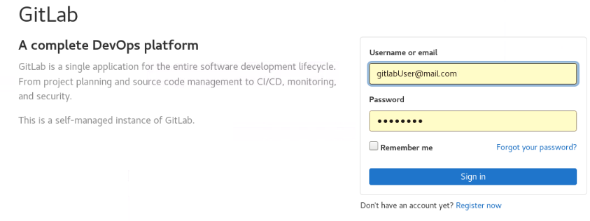
-
Import the openshift-workshop-was GitHub repository to GitLab on the local VM.
a. From the GitLab UI, click Create a project link.
b. Click on Import project to import this lab's repository from GitHub
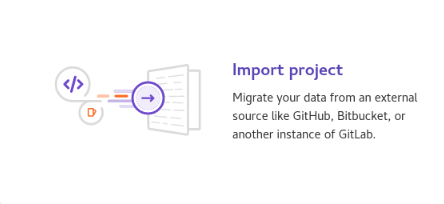
c. Under the import project from section, select the Repo by URL option
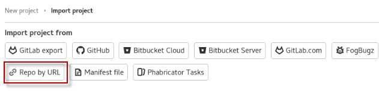
d. In the resulting page, enter the following values for each field:
-
Git repository URL: https://github.com/IBMTechSales/openshift-workshop-was.git
This is the GitHub repository that contains the resources for this lab
-
Project name: openshift-workshop-was
This is the GitHub repository that contains the resources for this lab
-
Project slug: openshift-workshop-was
-
Visibility Level: Public (Select the radio button for “Public” visibility
-
Leave the Username and Password filed blank. You do not need credentials to access the public repository
The form should look like the following filled-out form. When finished.
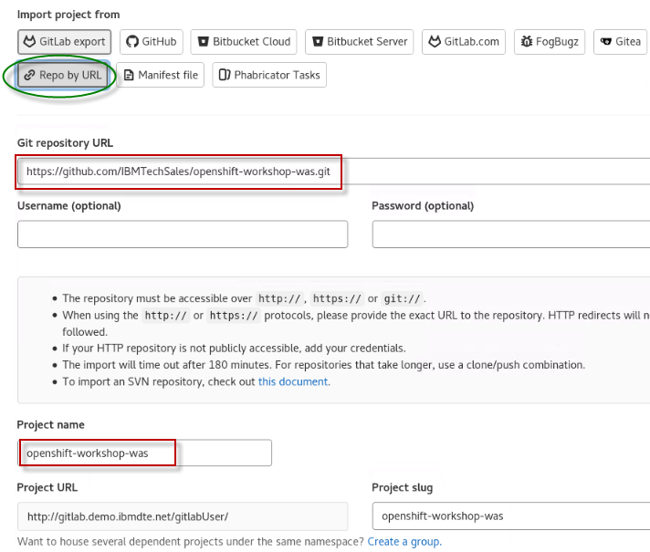
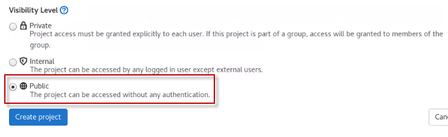
e. Click the Create project button, which will create the new project and populate it with the imported files from the specified GitHub repository.
-
-
Clone the openshift-workshop-was GitLab repository onto the VM.
a. From GitLab UI, click on the Clone button from the page displaying the imported repository.
b. Under the Clone with HTTP section, click on the copy icon to copy the repo link to clipboard.
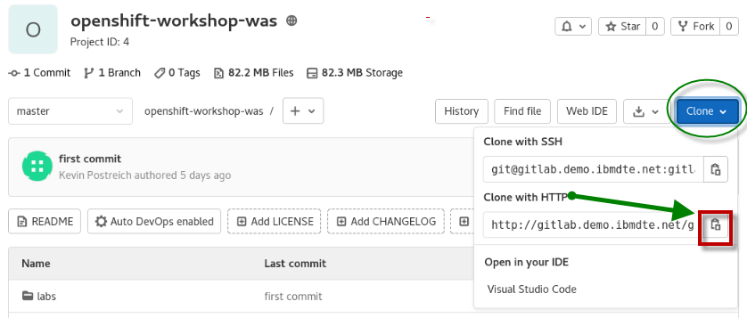
c. From the Desktop VM, open a new terminal window.
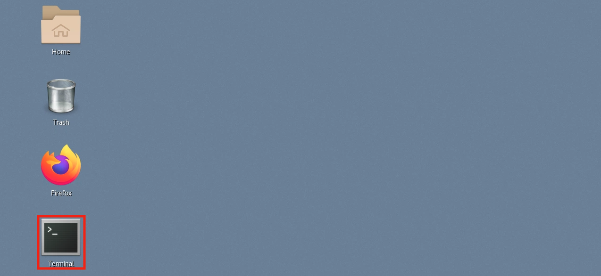
d. From the terminal window, ensure that you are in the home directory of the user "ibmuser"
cd /home/ibmusere. Run the following command to clone the repo with the GitHub using the URL you copied in the previous step. Enter username gitlabUser and password passw0rd if prompted to login.
git clone http://gitlab.demo.ibmdte.net/gitlabUser/openshift-workshop-was.git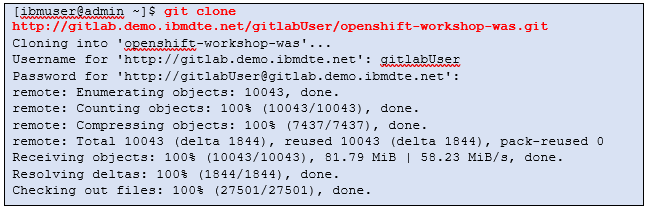
These commands above clone the repo openshift-workshop-was to the local directory under /home/ibmuser/openshift-workshop-was directory.
-
Change to the directory in which this lab is located.
cd /home/ibmuser/openshift-workshop-was/labs/Openshift/DevopsManagement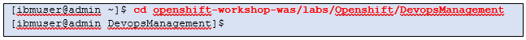
-
List the directory contents using the
lscommandYou will find the following key resources:
-
Dockerfile - Used to build the application on the Liberty runtime
-
Dockerfile1 - Used to build a new image for the application
-
app - The Customer Order Services application
-
deploy - Used to handle deployment of the application
-
argocd-basic.yaml - Used to create new Argo CD resource for operator
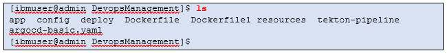
-
1.4.3 Login to OpenShift and create a new project for this lab
-
Type
oc loginto login to OpenShift. Use ibmadmin for the username and engageibm for the password.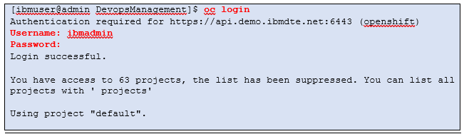
-
Type
oc new-project stagingwhich will create a new project named staging, and switch your context to that projectNote: Ensure you create the new project with the name “staging”.
Otherwise, you will be required to review and modify all YAML files that reference this OpenShift project (Namespace), prior to running the YAML files to create the pipeline resources.
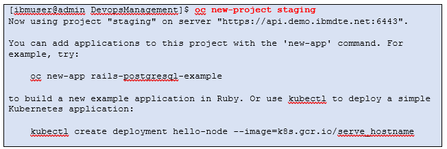
1.4.4 Build the Docker image & push the image to OpenShift Image Registry
You will now build the “cos” application container image using the Dockerfile that has been provided in the lab resources. This is the same application used in all labs in this workshop.
The cos application is a Java EE Application and runs on Open Liberty in this lab.
-
Run the following command to start building the image. Make sure to copy the entire command including the "." at the end (indicates the location as current directory). The image may a few minutes to complete building.
docker build --tag default-route-openshift-image-registry.apps.demo.ibmdte.net/staging/cos -f Dockerfile .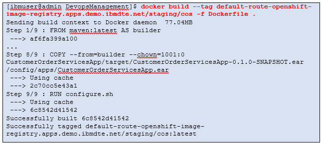
About the docker build command:
-
Instructs Docker to build the image following the instructions in the Dockerfile in the current directory
-
Specifies a name to tag the built image after --tag
-
Includes the value default-route-openshift-image-registry.apps.demo.ibmdte.net as the default address of the internal image registry provided by OpenShift
-
-
Validate that the image is in the repository by running the command:
docker images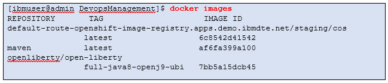
Notice that the openliberty/open-liberty base image is also listed. It was pulled during the first step of building the application image.
-
Login to the internal OpenShift image registry, where you will push the docker image.
docker login -u openshift -p $(oc whoami -t) default-route-openshift-image-registry.apps.demo.ibmdte.net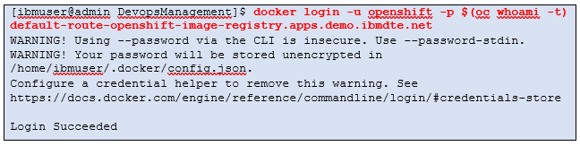
-
Push the image to OpenShift's internal image registry. (This could take a few minutes).
docker push default-route-openshift-image-registry.apps.demo.ibmdte.net/staging/cos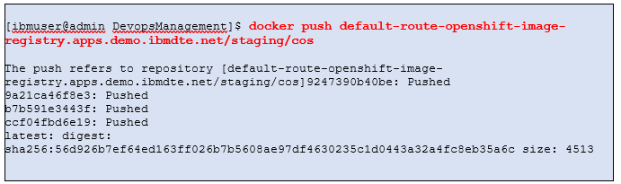
-
Verify that the image is in the image registry.
oc get images | grep staging/cos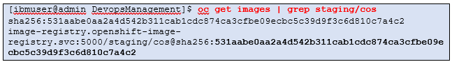
This command will get all images in the registry, but we can use grep to filter through the results to get only the image you pushed.
The hash of the image is stored alongside the SHA-256 value. Take note of this value so that you can identify the original image used to deploy the application.
In this example, the hash value is 531aabe0aa2a4d542b311cab1cdc874ca3cfbe09ecbc5c39d9f3c6d810c7a4c2 but yours will be different.
1.4.5 Get Argo CD login info from the OCP cluster
In this lab environment, Argo CD has already been installed to the OCP cluster using the Argo CD OpenShift operator. Additionally, all configurations have already been made so that Argo CD is ready for deployment and management of our application.
----------------------------------------------------------------------------------------
This setup involved the following, and is here for your reference:
Step 1. Deployed a basic Argo CD cluster by creating a new Argo CD resource in the namespace (argocd) where the operator is installed
- argocd-basic.yaml contains the YAML for this resource. You can review the contents of this file with the following command (make sure you are in the DevopsManagement directory):
cat argocd-basic.yaml
Step 2. Enabled full cluster admin access to example-argocd-argocd-application-controller service account (this service account was automatically created by the Argo CD resource in the previous step)
You can learn more about the install and setup of the Argo CD operator by reading its full documentation here: https://argocd-operator.readthedocs.io/en/latest/usage/basics/
----------------------------------------------------------------------------------------
In order to access the Argo CD UI, you will first need to obtain login credentials information from the OCP cluster. The credentials are stored in a Kubernetes secret in the argocd namespace.
-
Get Argo CD password info.
a. Return to your terminal window.
b. Run the following commands to export the Argo CD admin account's password and display it.
export ARGOCD\_PASSWORD=$(oc -n argocd get secret example-argocd-cluster -o jsonpath='{.data.admin\\.password}' | base64 -d) echo $ARGOCD\_PASSWORD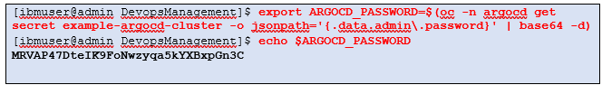
-
The Argo CD operator is installed in namespace argocd as specified with the -n option.
-
The example-argocd-cluster secret was automatically created by the Argo CD resource and contains login credentials.
c. Copy the password value outputted by the echo command (you will need this later for login to the UI)
-
1.4.6 Access the Argo CD UI and login
The Argo CD server component exposes the API and UI which is then made accessible by a service and OpenShift route created by the operator. This allows you to access the UI through your local VM.
-
Get the Argo CD route
oc -n argocd get routes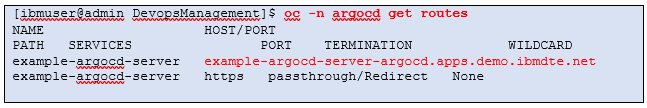
-
Based on the Argo CD the route information, the Argo CD UI URL is:
https://example-argocd-server-argocd.apps.demo.ibmdte.net
a. Open this URL in a new tab from your Firefox browser in the desktop VM
-
A login page will be displayed. Login with username admin and enter the Argo CD password value we copied previously as the password. Click Sign In.
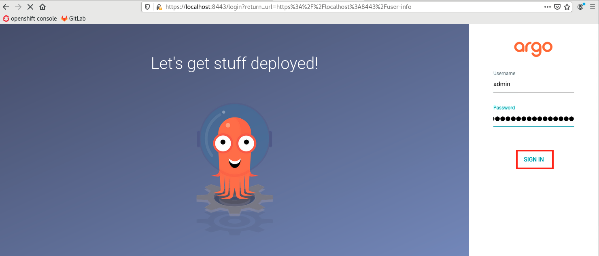
1.4.7 Create an Argo CD project in the UI
Now that the UI is accessible and ready to go, we can create a new Argo CD project staging to host the Argo CD application.
-
Create a new Argo Cd project
a. From the Argo CD UI home page, navigate to the Settings page by clicking on the gears icon from the menu on the left. Then, click on Projects.
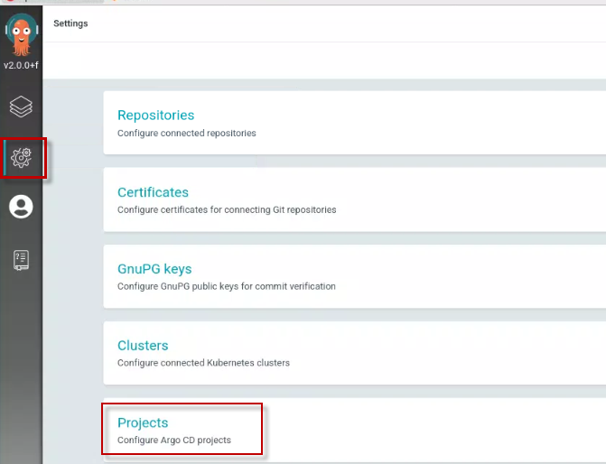
b. Click on the New Project button in the upper left corner of the page.
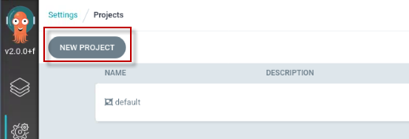
c. In the window that pop ups from the right, enter Name staging and Description staging. Then, click on Create.
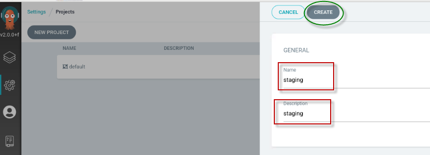
d. The staging project summary details page is now shown.
A Project in Argo CD provide a logical grouping of applications, which is useful when Argo CD is used by multiple teams. Projects provide the following features:
-
Source Repositories: Reference to the repositories that applications within the project can pull manifests from
-
Destinations: Reference to clusters and namespaces that applications within the project can deploy into
-
Cluster Resources: The Kubernetes cluster resources that are allowed or denied to be deployed
-
-
Edit the SOURCE REPOSITORY properties of the staging project to define source repositories
a. In the Source Repositories section, click on the Edit button
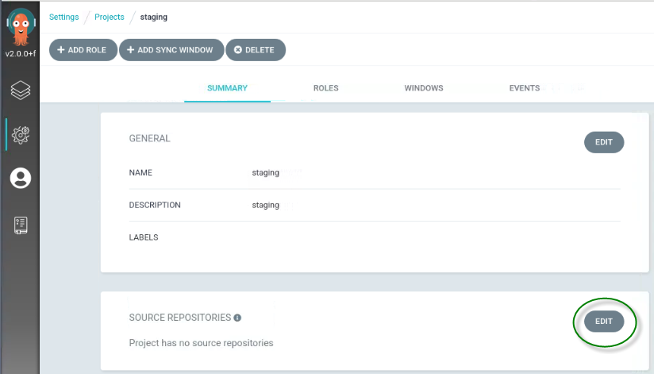
b. Click on Add Source
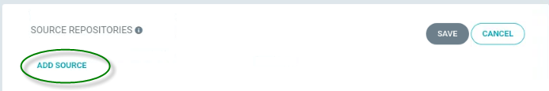
c. This will show an asterisk (*). Click on the Save button.
- Adding this source repository will allow our staging project to retrieve data from any Git repository where our application lies.
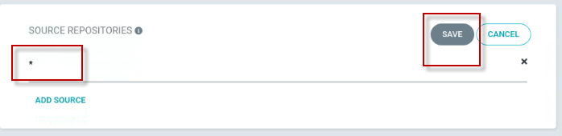
-
Edit the DESTINATIONS properties of the staging project to define destination cluster / namespaces that the projects applications can be deployed.
a. In the Source Repositories section, click on the Edit button
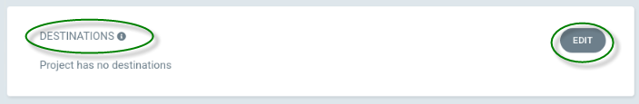
b. Click on Add Destination
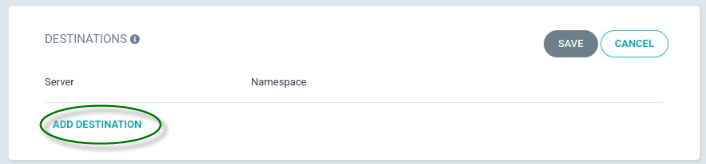
c. This will show an asterisk (*). Click on the Save button.
- Adding this destination allows the project to deploy our application to a cluster and namespace.
-
Edit the CLUSTER RESOURCE ALLOW LIST properties of the staging project to define Kubernetes resources that are allowed to be deployed in the cluster
a. In the CLUSTER RESOURCE ALLOW LIST section, click on the Edit button
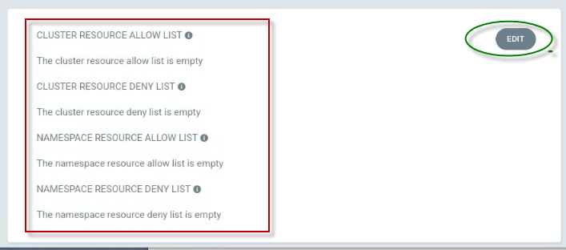
b. Click on Add Resource under the CLUSTER RESOURCE ALLOW LIST section
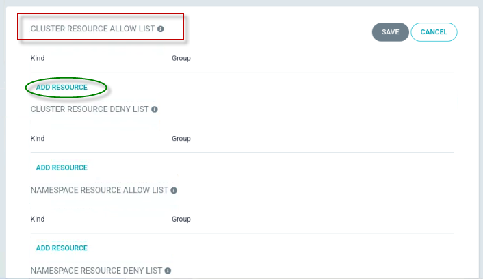
c. This will show an asterisk (*). Click on the Save button.
- Adding this resource allow list source permits deployment of Kubernetes API groups and kinds to the Kubernetes cluster.
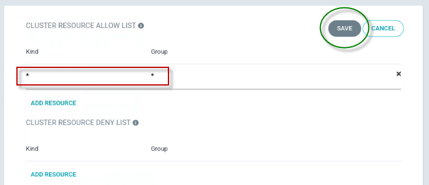
-
When you are done, the project page should look like the following:
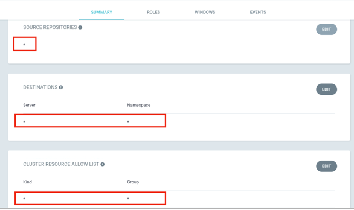
The staging project is now configured to permit deployment of applications to the OpenShift Cluster. You likely noticed that we simply used wildcards to specify the permitted source repos, destinations, and cluster resources.
In a real environment, you would take special care to restrict these permissions to known trusted resources and limit the destinations and resources based on the business and application requirements.
1.4.8 Deploy application through Argo CD UI
Now that the project has been properly set up, you are ready to deploy the Customer Order Services application using Argo CD.
-
Navigate to the Applications tab in the Argo CD UI by clicking on the top icon in the left menu. This will bring you to a page displaying all applications currently being run by Argo CD.
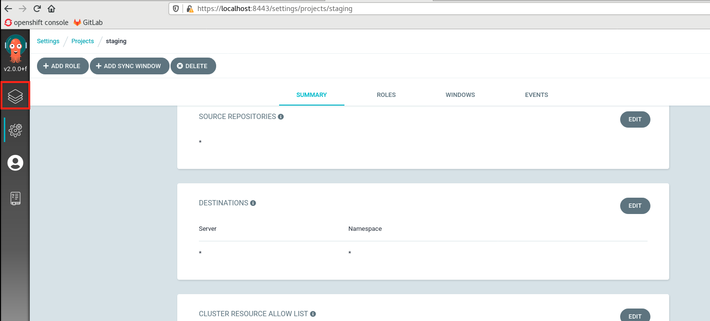
-
Click on New App in the upper left of the page to create a new deployment of our application.
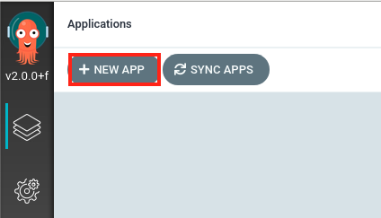
-
Return to the GitLab page displaying the openshift-workshop-was project. Click on Clone and copy the link under the Clone with HTTP section. You will need this URL to create the application in the Argo CD UI.
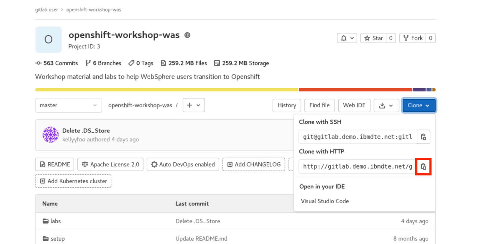
-
Enter the following details to create the application. Click Create to finish, after completing the form.
GENERAL settings:
-
Application Name:
cos -
Project:
staging -
Sync Policy:
Manual
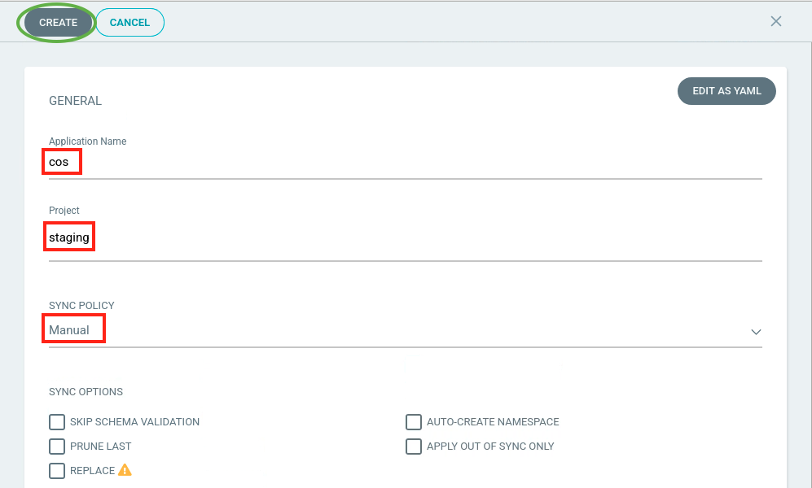
SOURCE settings:
- Repository URL:
http://gitlab.demo.ibmdte.net/gitlabUser/openshift-workshop-was.git
Note: This is the URL that you copied from GitLab in the previous step.
-
Revision:
HEAD -
Path:
labs/Openshift/DevopsManagement/deploy/overlays/staging
Note: This is the path within the repository to the YAML files that handle the application's deployment for the staging project.
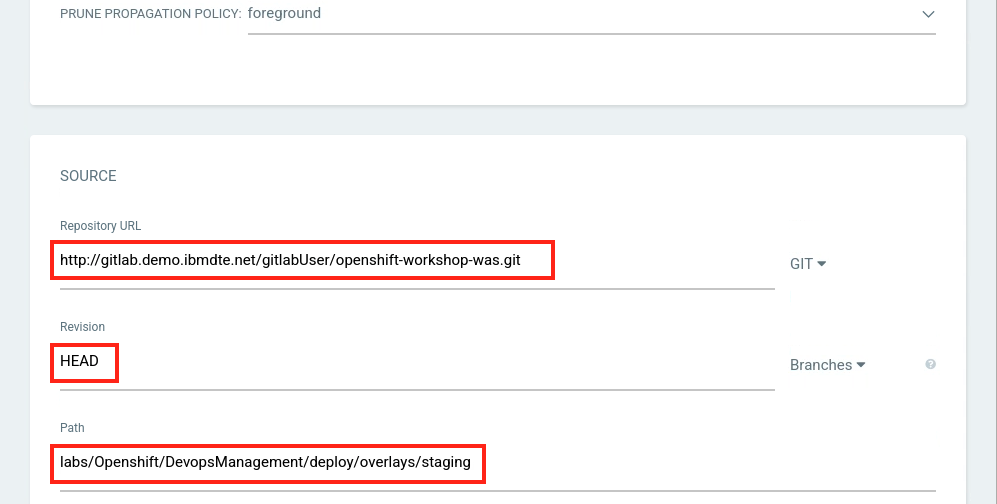
DESTINATION settings
-
Cluster:
https://kubernetes.default.svc -
Namespace:
staging
Note: This corresponds to the new staging OpenShift project we created previously.
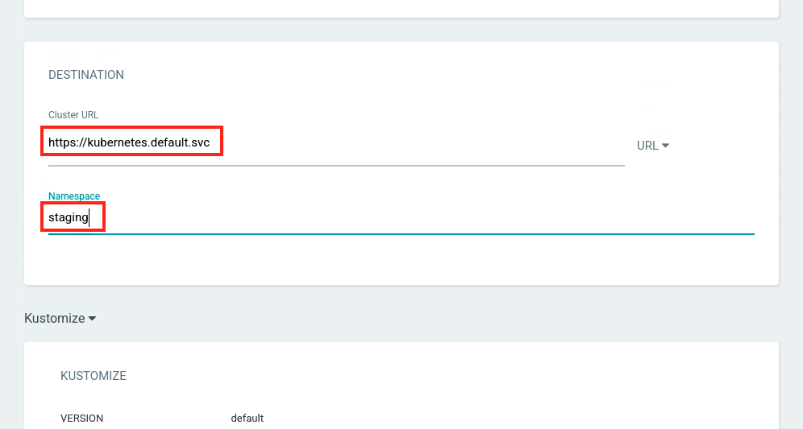
-
-
This new application will now be listed among available apps, but it will initially be out of sync. Because we set a Manual sync policy, you will need to sync it for deployment.
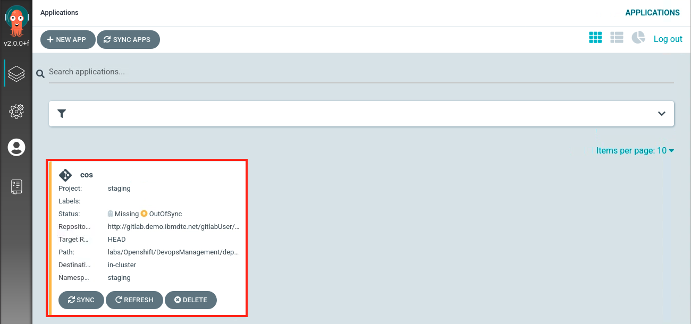
-
In order to sync the application with your Git repository, click on Sync within the cos application's panel and then click Synchronize in the resulting pop-up window.
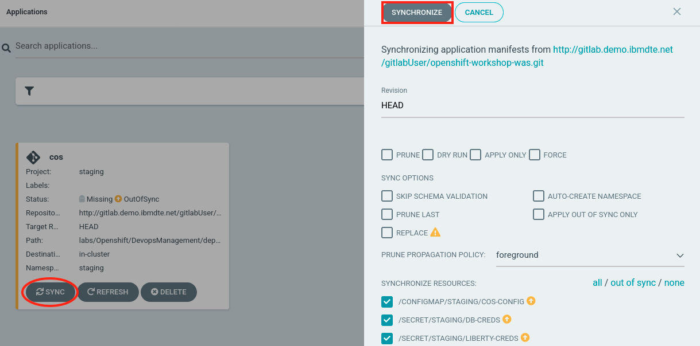
Do not check off any of the various options available for you (prune, dry run, etc.) but a brief description of what each of these do is given below for a better understanding of how Argo CD works.
-
Prune: allow unexpected resources to be automatically deleted
-
Dry Run: preview of changes without affecting the cluster yet
-
Apply Only: only run the apply for application resources
-
Force: force sync the application
-
-
Once the sync is complete, Argo CD will begin the deployment process of the application. When it is done, the STATUS should be Healthy and Synched as illustrated below
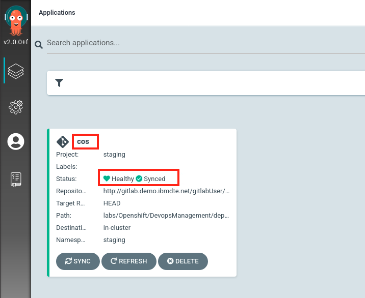
-
Click on the cos application to view additional details. Hover over the cos pod block to see the image used for deployment. We know this is the same image as the one we built before because of the corresponding hash value.
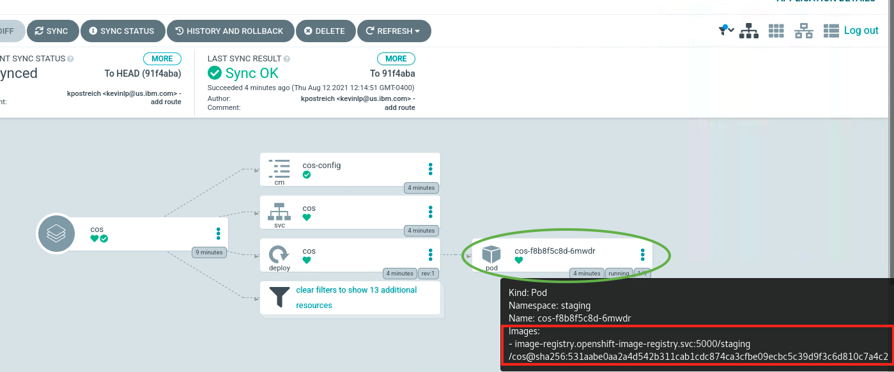
1.4.9 Verify the application's deployment
You will now access the Customer Order Services application to verify that it has been correctly deployed by Argo CD.
-
Return to your Terminal window and run the following command to list the cos-staging route in our staging namespace.
oc get route -n staging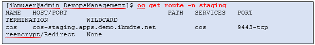
-
Run the following command to get the URL of your application, from the route
echo http://$(oc get route cos --template='{{ .spec.host > }}')/CustomerOrderServicesWeb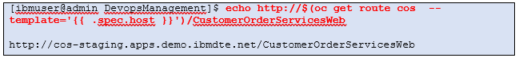
The resulting URL is where we can access our deployed application.
-
Return to your Firefox browser window, open a new Browser tab; then open the URL outputted by the previous command in a new tab.
http://cos-staging.apps.demo.ibmdte.net/CustomerOrderServicesWeb -
You will be prompted to login in order to access the application. Enter username skywalker and password force. Then, click OK.
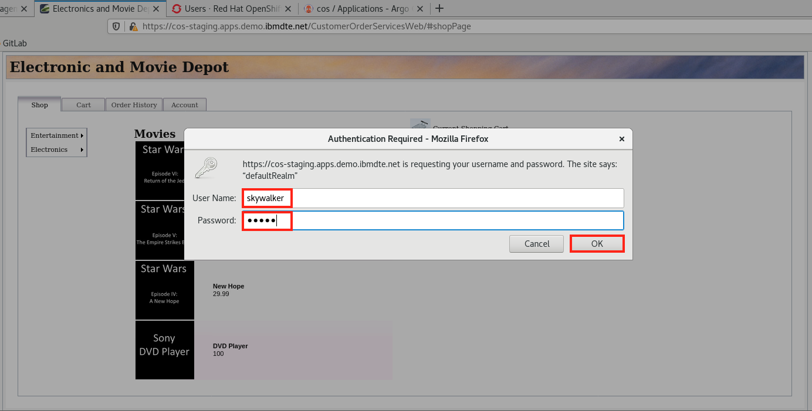
-
After login, the page titled Electronic and Movie Depot will be displayed. Drag and drop a few movies into the shopping cart to ensure that the application is functioning correctly.

-
As items are added, they'll be shown under Current Shopping Cart (on the upper right) with the updated Order Total.
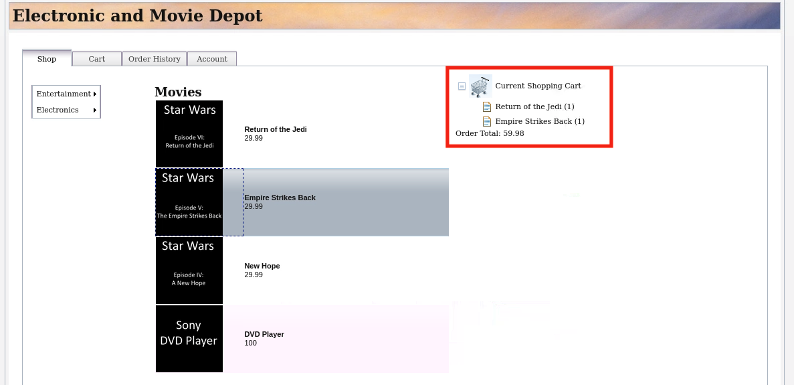
1.4.10 Update the deployment through Git and view changes in Argo CD
The application is now synced with your GitHub repository by Argo CD, making it simple to apply any latest changes and update deployment. You will see how this works by pushing changes to your GitHub repo and checking to see how this is reflected in Argo CD. Let's simulate an updated application version release by building and tagging a new image.
-
Build a new image using Dockerfile1 instead of Dockerfile in the current directory and tag it with v2.0 to indicate a new version of the image:
docker build --tag default-route-openshift-image-registry.apps.demo.ibmdte.net/staging/cos:v2.0 -f Dockerfile1 .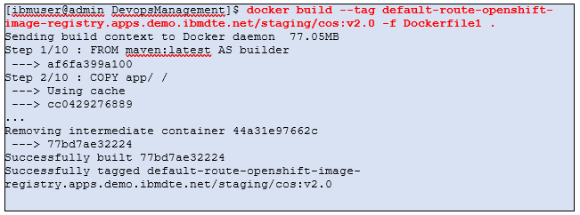
-
Verify that a new Docker image has been built with the updated v2.0 tag:
docker images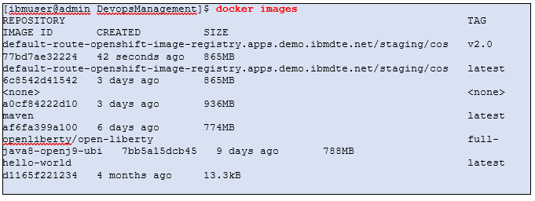
-
Push this new image (v2.0) to OpenShift's internal image registry.
docker push default-route-openshift-image-registry.apps.demo.ibmdte.net/staging/cos:v2.0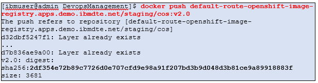
Take note of your new image's hash value (shown alongside sha256) so that you can identify the updated image in the Argo CD UI.
In this example, the image's hash value is 2df354e72b89c7726d0e707cfd9e98a91f207bd3b9d048d3b81ce9a89918883f but yours will be different.
-
Update the application's deployment in your GitHub repository so that the newly created version of the image is used instead and push these changes.
You will do this by updating the Kustomize staging overlay, to point to v2.0 of the application for deployment to the staging environment.
a. Open the applicationImage.yaml file in an editor:
gedit deploy/overlays/staging/applicationImage.yamlb. Change the value for applicationImage so that the new image with v2.0 tag is used. The file should look like the image above. Then, click Save.
c. Return to your Terminal window and run the following commands to push these changes to your GitLab repository. Enter username gitlabUser and password passw0rd when prompted to login.
git add . git commit -m "new image version" git push -u origin master
-
Check that the updated version of the image has been applied to the application in Argo CD.
a. Return to the Argo CD UI from your Firefox web browser and open the cos application details page if not open already.
b. Upon refresh of the page, the application's status is now shown as OutOfSync because of the changes you made to the GitLab repo.
c. Because we set up manual sync for this application, you will need to resync it to see applied changes. To do so, click on the Sync button and then Synchronize.
d. Once the manual synch is complete, hover your cursor over the new pod with name starting with cos to view additional details.
Notice how the value for image now corresponds to the new hash of the updated image version that you took note of earlier.
As you can see, the new image version has been updated by Argo CD! Version 2.0 of the cos application was automatically deployed to the staging environment.
1.4.11 Using the Argo CD CLI
Argo CD also has a Command Line Interface, which has already been installed on your environment. This allows you to perform important Argo CD functions such as login, create projects, applications, and sync applications through command line instead of the UI. Let's see some examples of these functions:
-
Login using the CLI
a. Export the Argo CD admin account's password again for login.
export ARGOCD_PASSWORD=$(oc -n argocd get secret example-argocd-cluster -o jsonpath='{.data.admin\.password}' | base64 -d) echo $ARGOCD\_PASSWORDb. Enter the following command to login to the Argo CD server as the “admin” user. When asked if you want to proceed insecurely, type in y and press enter to continue.
argocd login --username admin --password $ARGOCD_PASSWORD example-argocd-server-argocd.apps.demo.ibmdte.net -
List all Argo CD applications with the following command. You will see the cos application we just created listed along with some of its details.
argocd app list
-
You can view additional details of an application with the argocd app get command. Let's do this for our application cos.
argocd app get cos
-
You can also sync applications through the Argo CD CLI.
argocd app sync cos -
Now, let's logout of Argo CD.
argocd logout example-argocd-server-argocd.apps.demo.ibmdte.net
There are many other Argo CD CLI commands that can be run. For a full list of these functions and further reading on the Argo CD command line tool, you can take a look at:
https://argoproj.github.io/argo-cd/user-guide/commands/argocd/
1.5 Conclusion
Congratulations! You have completed the lab and are on your way to using Argo CD and GItHub for continuous integration, delivery and deployment of your application with the RedHat OpenShift Container Platform.
In this lab, you learned how to deploy and automate management of an application using Argo CD following GitOps practices.
End of Lab: GitOps with Argo CD
----------------------------------------------------------------
Appendix: SkyTap Tips for labs
How to use Copy / Paste between local desktop and Skytap VM
Using copy / Paste capabilities between the lab document (PDF) on your local workstation to the VM is a good approach to more efficiently work through a lab, while reducing the typing errors that often occur when manually entering data.
-
In SkyTap, you will find that any text copied to the clipboard on your local workstation is not available to be pasted into the VM on SkyTap. So how can you easily accomplish this?
a. First copy the text you intend to paste, from the lab document, to the clipboard on your local workstation, as you always have (CTRL-C)
b. Return to the SkyTap environment and click on the Clipboard at the top of the SkyTap session window.

c. Use CTRL-V to paste the content into the Copy/paste VM clipboard. Or use the paste menu item that is available in the dialog, when you right mouse click in the clipboard text area.
d. Once the text is pasted, just navigate away to the VM window where you want to paste the content. Then, use CTRL-C, or right mouse click & us the paste menu item to paste the content.
e. The text is pasted into the VM
Note: The very first time you do this, if the text does not paste, you may have to paste the contents into the Skytap clipboard twice. This is a known Skytap issue. It only happens on the 1st attempt to copy / paste into Skytap.